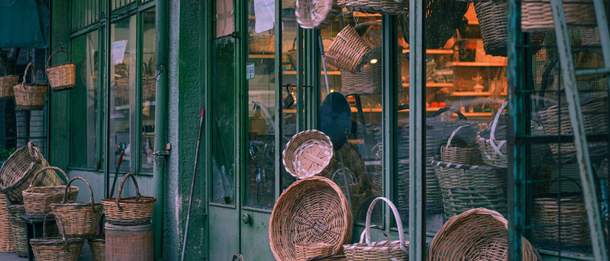
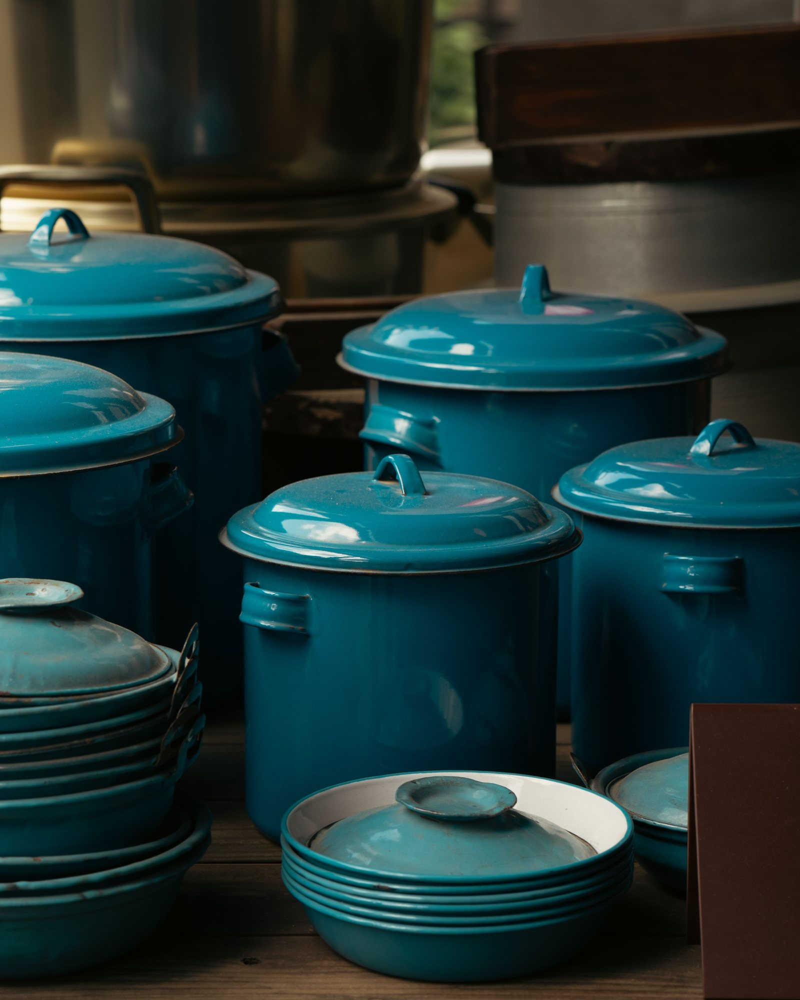
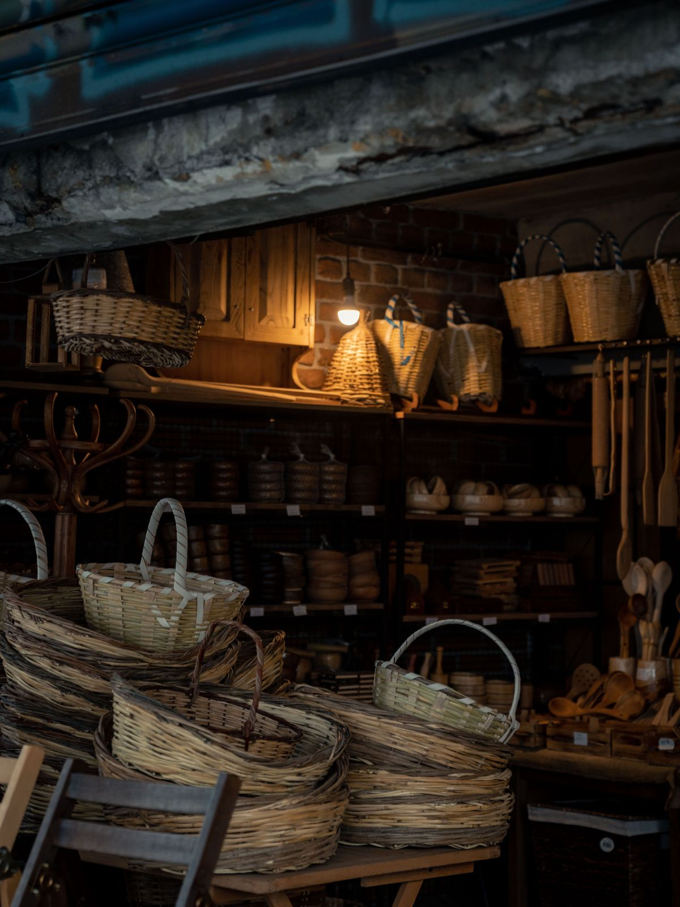
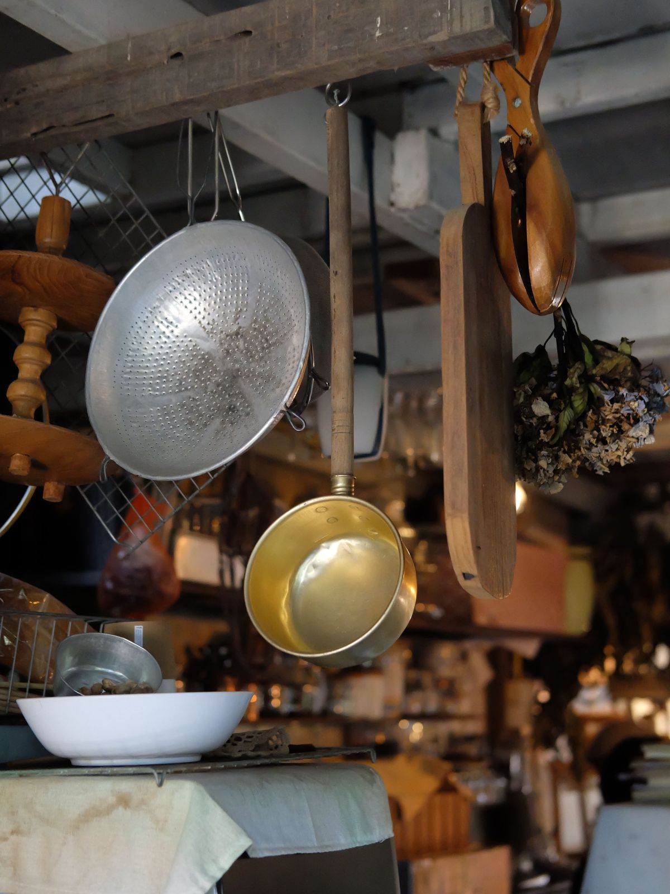
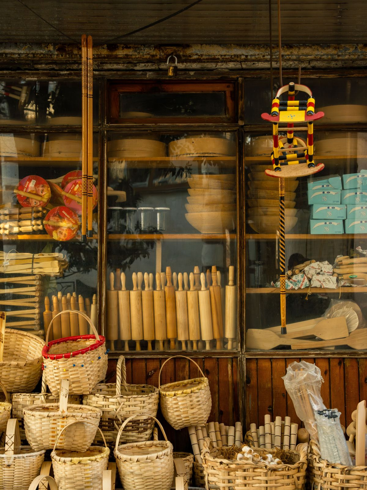
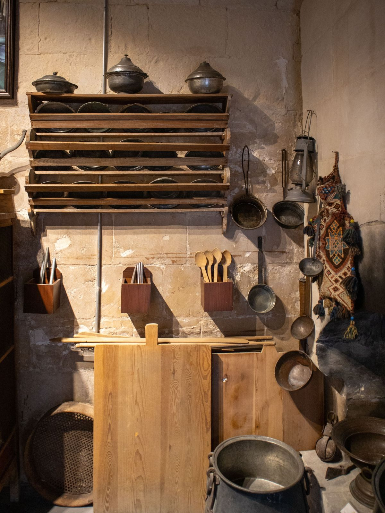
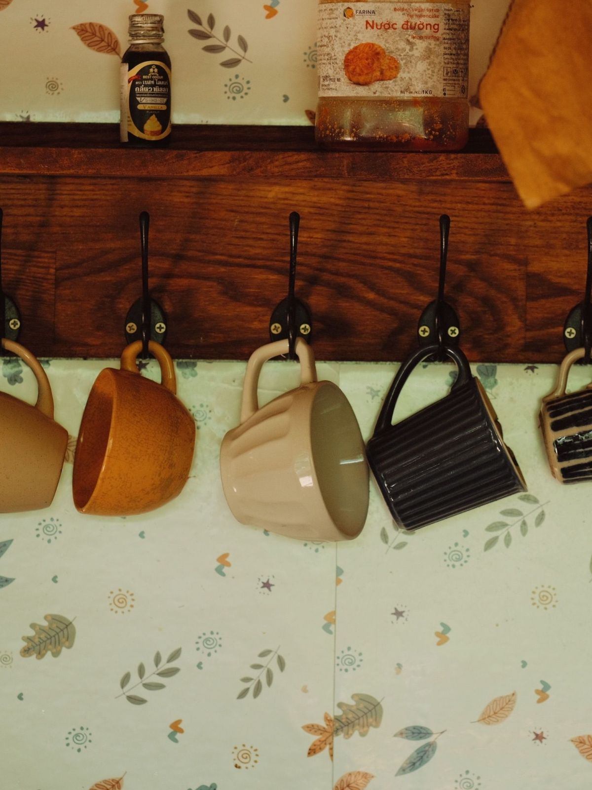
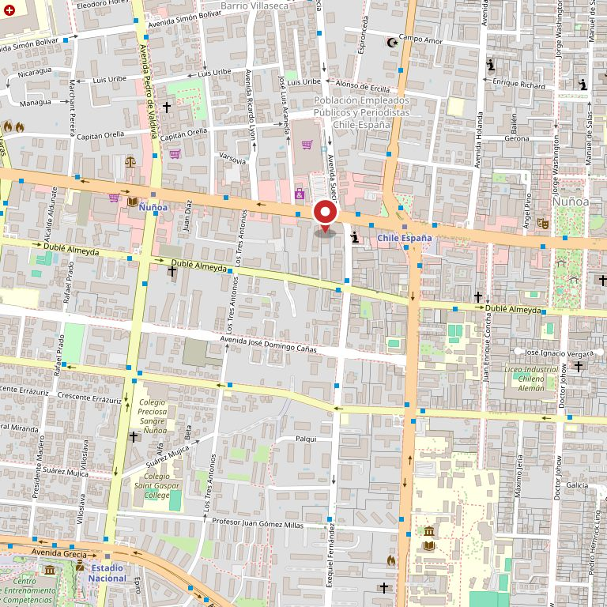

Lo de siempre
- Ollas, sartenes y loza de reposición
- Herramientas de cocina y utensilios sueltos
- Rieles, barras y ganchos de cortina
- Ferretería chica: tornillos, pilas, ampolletas
- Escobas, baldes y todo lo de logia
Ñuñoa · 1.300 reseñas
Menaje, ferretería, cortinas, baño y jardín en la misma cuadra de siempre. Lo que no está en la repisa, se encarga. Lo que falta es una página que lo diga.
Ver lo que hay Llamar a la tienda

1.300
reseñas en Google, verificadas el 27-08-2026. No mostramos la nota: lo que dice algo acá es el volumen
1.041
personas siguiendo @comercial_schmidt el 11-09-2026. Ese público ya existe y no tiene dónde aterrizar
2
maneras de llegar hoy: pasar por la vitrina o preguntarle a alguien del barrio
0
páginas propias que carguen. El dominio existe y el servidor no contesta
La pregunta del que vuelve
Sí, y además llegó otra cosa. Una tienda que dura no cambia el surtido entero: le suma una repisa. Estas dos son las que hay que poder mirar antes de venir.
Lo que no está en la repisa
El mostrador de una tienda así no es una caja: es el lugar donde se encarga lo que no está. Eso no lo puede hacer ninguna tienda en línea grande, y es exactamente lo que no aparece en ninguna parte escrito.
Los tres van marcados como ejemplo a propósito: son lo que hace un mostrador de barrio, no una promesa de esta tienda. Con la lista real, esta sección sola justifica la página. No hay precios: publicar un valor que no nos dieron sería inventarlo.
De la puerta hacia adentro
Las seis salen de lo que publican directorios de terceros, no de la tienda. Van marcadas como ejemplo hasta que ellos las confirmen, que es una conversación de dos minutos.

Mil trescientas veces
Mil trescientas reseñas son mil trescientas personas que entraron, encontraron lo que buscaban y volvieron a decirlo por escrito. Eso no se compra con publicidad y tampoco se hereda: es el activo del negocio. Lo único que falta es que ese activo tenga una dirección en internet que funcione.
La dirección y el horario están marcados como ejemplo porque no nos los dio la tienda: los publican directorios de terceros. El teléfono sí es el de su ficha de Google, y es fijo.
«Mil trescientas personas escribieron cómo les fue.
Ninguna de esas opiniones lleva a una página que cargue.»
Lo que pasa hoy
El dominio a nombre de la tienda no respondió a ninguna petición el 11-09-2026: no da error, simplemente no contesta. Para Google y para el que busca, es lo mismo que no existir.





Estas fotos son de bancos de uso libre y no son de Comercial Schmidt. Están para que se vea de qué habla la página. Las de verdad las tiene la tienda: mil trescientas personas ya entraron a fotografiarlas.
Preguntar
El número de su ficha de Google es fijo, así que no recibe WhatsApp. Por eso esta página no tiene un botón que prometa algo que no existe: llama, o escribe por Instagram.
@comercial_schmidt — 1.041 seguidores el 11-09-2026

Para el dueño
Una propuesta de sitio web hecha por nuestra cuenta. Comercial Schmidt no la encargó ni la ha revisado. Dimos por cierto sólo lo público: las 1.300 reseñas de su ficha de Google, el teléfono fijo y la cuenta de Instagram.
El 11-09-2026 probamos comercialschmidt.cl cuatro veces, con y sin www, por http y por https: el nombre existe en el DNS pero el servidor no contesta en veinte segundos. No sabemos por qué —puede ser algo de un día—, pero mientras dure, para quien busca es lo mismo que no tener nada.
Las secciones, lo que hay en cada una, el horario y la dirección exacta salen de directorios de terceros, no de la tienda. Todo va marcado con línea punteada, y no hay precios a propósito. Tampoco afirmamos años de historia: «clásico» lo dicen las reseñas, no una fecha que podamos comprobar.